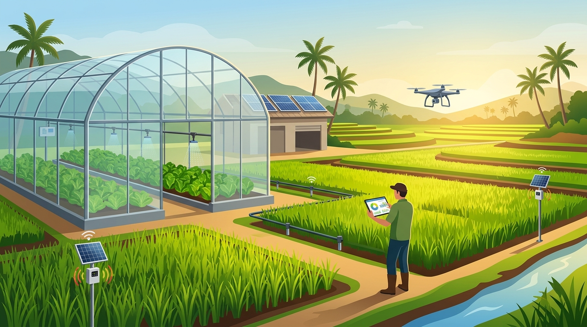

🤖 ผู้ช่วย AI เกษตรอัจฉริยะ
วิเคราะห์ข้อมูลการเติบโต สภาพแวดล้อมแปลงปลูก และตอบคำถามอัตโนมัติ
🧠 การวินิจฉัยฟาร์มอัตโนมัติวันนี้
เชื่อมต่อ Gemini API Key (ทางเลือกเสริม)
ระบบ AI ในตัวสามารถวิเคราะห์ข้อมูลฟาร์มและตอบคำถามได้ทันที 100% โดยไม่ต้องใส่คีย์ แต่หากต้องการเชื่อมต่อ Google Gemini API เพิ่มเติม สามารถวาง API Key ด้านล่างได้ครับ
⏱️ รายงานและกราฟทุก 30 นาที
เปรียบเทียบแนวโน้มการเติบโตแบบรวมและแยกรายต้น พร้อมพิกัดแปลงปลูก
แจ้งเตือนเวลาที่กำลังสรุปผลข้อมูลต้นไม้แต่ละรอบ 30 นาที
เลือกเวลาหรือกดปุ่มจำลองวิ่งสรุปผลทีละ 30 นาที เพื่อดูค่าสรุปของต้นไม้ทุกต้น ณ เวลานั้นๆ พร้อมประวัติการแจ้งเวลา
แนวโน้มการเติบโตของต้นไม้ทุกต้น (ทุก 30 นาที)
แสดงเส้นแนวโน้มพร้อมค่าเฉลี่ยรวม
รายงานกราฟแยกตามรายต้น
ติดตามข้อมูลการเติบโตและพิกัดแผนที่ของแต่ละต้น
ตารางสถิติและผลการวัดรายรอบ
🧊 แบบจำลองสมาร์ทฟาร์ม 3 มิติ
หมุนมุมกล้อง 360° ซูมเข้า-ออก และติดตามการเติบโตของแปลงปลูก
🌍 ภาพรวมสมาร์ทฟาร์ม จ.นครพนม
แสดงแปลงเพาะปลูกทั้งหมด 4 โซน
🎛️ ผังควบคุมสมาร์ทฟาร์ม 2D & IoT
ควบคุมระบบน้ำ พัดลมระบายอากาศ และระบบให้ปุ๋ยในแต่ละโซน
📋 กระดานติดตามระยะการเติบโต (Kanban)
ติดตามสถานะพืชผลแยกตาม 4 ระยะการเจริญเติบโต
💰 ประมาณการผลผลิตและรายได้
คำนวณผลผลิตและรายได้คาดการณ์ตามพื้นที่เพาะปลูก
ติดตามพัฒนาการพืชผลเศรษฐกิจ จ.นครพนม
ตรวจสอบการเติบโต 5 ระยะ ความสูง จำนวนใบ ความชื้น และค่า pH พร้อมแผนที่พิกัด GIS

เพาะเมล็ด ➔ ต้นกล้า ➔ แตกใบ ➔ ออกดอก/ติดผล ➔ เก็บเกี่ยว
🌱 การ์ดติดตามระยะการเติบโตและสุขภาพพืชรายแปลง
📅 เกณฑ์มาตรฐานระยะการเจริญเติบโต
เกณฑ์อ้างอิงในการประเมินการเติบโตและแผนการดูแลรักษา
| ระยะการเจริญเติบโต | ช่วงอายุพืชโดยประมาณ | ตัวชี้วัดการเติบโตที่สำคัญ | ความชื้นดิน & ค่า pH ที่เหมาะสม | แผนการใส่ปุ๋ยและดูแลรักษา |
|---|---|---|---|---|
| 1. ระยะต้นกล้า (Seedling) | 1 – 15 วัน | อัตราการงอก, ความสูง 5–15 ซม., ใบจริง 2–5 ใบ | ความชื้น 70–75% • pH 6.0–6.5 | ให้น้ำสม่ำเสมอ พรางแสง 50% เสริมธาตุอาหารอ่อนๆ |
| 2. ระยะเจริญเติบโตทางใบ (Vegetative) | 16 – 35 วัน | ความสูงเพิ่มเร็ว (1.2–2.0 ซม./วัน), แตกใบใหม่ 10–18 ใบ | ความชื้น 65–72% • pH 6.0–6.8 | ใส่ปุ๋ยบำรุงต้นและใบ (ไนโตรเจนสูง) ป้องกันแมลงกินใบ |
| 3. ระยะออกดอก/ติดผล (Flowering) | 36 – 55 วัน | ลำต้นแข็งแรง, ออกดอกและติดผล, ใบสมบูรณ์สีเขียวเข้ม | ความชื้น 60–68% • pH 6.2–6.8 | เสริมฟอสฟอรัสและโพแทสเซียม ช่วยผสมเกสรและค้ำยันกิ่ง |
| 4. ระยะพร้อมเก็บเกี่ยว (Harvest) | 60 วันขึ้นไป | ขนาดผล/รวง/ทรงพุ่มได้มาตรฐาน ความหวานหรือน้ำหนักถึงเกณฑ์ | ความชื้น 55–65% • pH 6.0–6.5 | งดให้น้ำมากเกินไปก่อนเก็บเกี่ยว สุ่มตรวจคุณภาพผลผลิต |
🗺️ แผนที่พิกัดแปลงเกษตร (GIS) 📍 ปักหมุด 5 ต้น
คลิกที่หมุดบนแผนที่เพื่อดูข้อมูลการเติบโต หรือคลิกบนแผนที่เพื่อปักหมุดแปลงใหม่
📌 รายการหมุดแปลงเกษตรบนแผนที่
➕ ปักหมุดเพิ่มแปลงใหม่จากจุดที่คลิกบนแผนที่
แบบบันทึกการวัดขนาดต้นพืชและประเมินสุขภาพ
จำลองขนาดต้นพืชและวินิจฉัยสภาพแวดล้อม
ต้นพืชเจริญเติบโตอยู่ในเกณฑ์ดีเยี่ยม (AGR = 1.38 ซม./วัน) ความชื้นในดิน 68% และค่า pH 6.5 เหมาะสมต่อการดูดซึมธาตุอาหาร แนะนำให้รักษาระดับการให้น้ำตามปกติ
กราฟแนวโน้มการเจริญเติบโต
กราฟเรดาร์ดัชนีสุขภาพพืช 4 ด้าน
คะแนนประเมินความสมบูรณ์รายด้าน
สัดส่วนการบันทึกข้อมูลแยกตามแปลง
ตารางสถิติและค่าเฉลี่ยการประเมินพืชผล
เกณฑ์การแปลผล: 4.50–5.00 = ดีเยี่ยม | 3.50–4.49 = ดี | 2.50–3.49 = ปานกลาง | 1.50–2.49 = พอใช้
| รายการประเมินการเจริญเติบโตและสุขภาพพืช | ค่าเฉลี่ย (X-bar) | ส่วนเบี่ยงเบนมาตรฐาน (S.D.) | คิดเป็นร้อยละ | แปลผลคุณภาพการเติบโต |
|---|
ตารางประวัติการสำรวจและวัดการเติบโตพืชผลรายครั้ง
| วันที่สำรวจ | แปลงปลูก / ชนิดพืช | อายุ / ระยะเติบโต | ความสูง / ใบ / ชื้น / pH | คะแนนสุขภาพ | บันทึกภาคสนาม | จัดการ |
|---|
เพิ่มแปลงเพาะปลูกหรือชนิดพืชผลที่ต้องการติดตาม
สามารถกำหนดชื่อแปลง โซนโรงเรือน และพิกัดแผนที่ได้ทันที
รายชื่อแปลงเพาะปลูกและพืชผลในระบบทั้งหมด
| รหัสแปลง | ชื่อแปลงเพาะปลูก / ชนิดพืชผล | โซนพื้นที่ / พิกัด GPS | จำนวนครั้งที่สำรวจ | จัดการ |
|---|